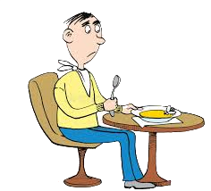
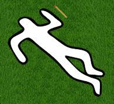
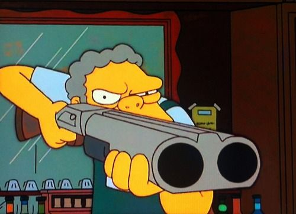
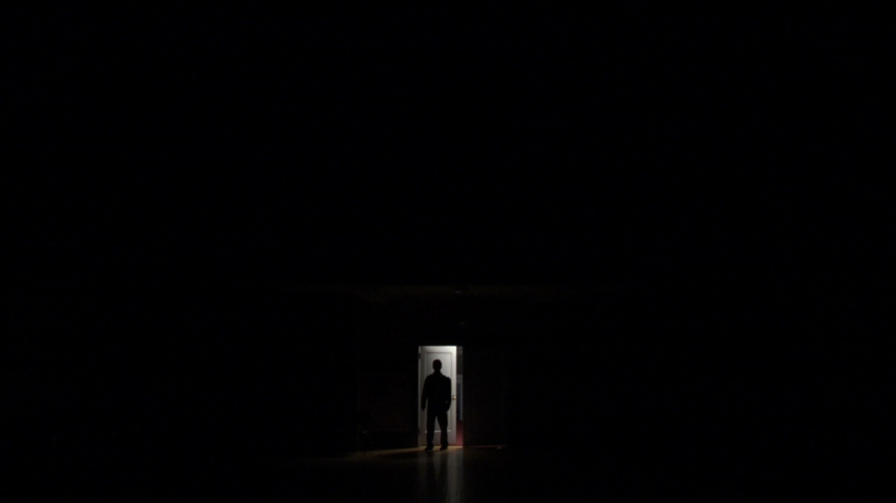

Here you will find a list of all the best lateral thinking puzzles known to man!
A man walks into a resturaunt and orders Salmon. After the waiter brings him the dish, the man takes one bite, then goes to the bathroom and kills himself. Why?
A man hears a knock at his door. He goes to the door and finds a package delivered to him, so he takes it inside and opens it up, and inside is a human arm. The man inspect the arm for a few minutes, then puts it back in the box and ships it to another man. This second man again inspects the arm upon recieving it, then goes tot he woods behind his house and buries it. What's going on here?
A man is found lying dead in the middle of an empty field with nothing notable on or around him except for a single unlit match. How did he die?
A man walks into a bar and orders a glass of water. Instead of giving him a glass of water, the bartender whips out a gun and points it at the man. The man then thanks the bartender and leaves. Why?
A woman returns from a long, tiring journey, so as soon as she gets home, she throws her bag down, quickly brushes her teeth, turns out all the lights and goes to bed. She wakes up refreshed the next morning, goes downstairs and turns on the TV, then kills herself. Why?
Mrs. Peabody wakes up one morning and looks at the morning paper where the headline is "Mr. Garvey's wife dies in tragic skiing accident in the Swiss Alps." Mrs. Peadbody immediately calls the police and tells them that Mr. Garvey killed his wife and is correct. how did she know?
If he had seen the sawdust he never would have died.
A man goes into a dark room, but leaves only a few minutes later, goes home and kills his wife. Why?
A man was found dead.
Supposedly based off a true story! (Don't fact check)
Nick drove home after a long day at work and as soon as he stepped out of the car, he knew something was wrong. He ran inside and saved Randy's life.